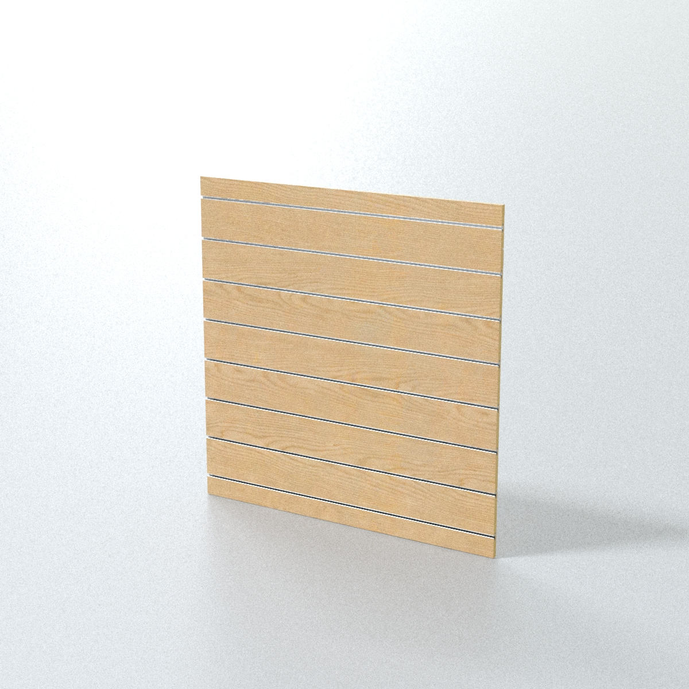
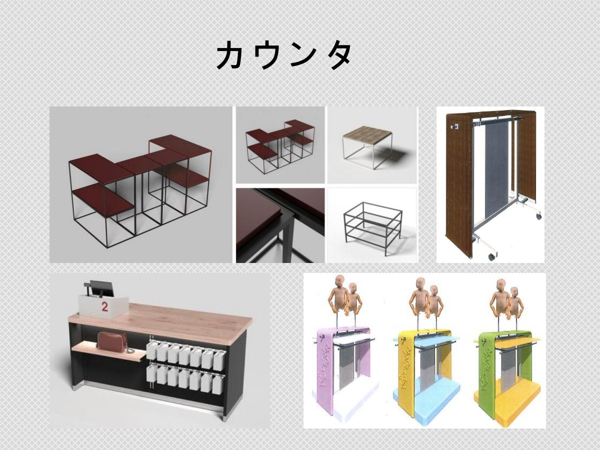

可直接查看
展示掛勾代表性尺寸圖與 PAGE 化妝品展示資料紀錄可直接查看，內容標示適用的版本與證據邊界。
TECHNICAL RESOURCE ENTRY
先從公開可核對的尺寸圖、產品證據與案例紀錄開始；若需要 PDF、CAD、DWG、DXF 或 STEP，請附上產品、系統、數量與專案條件，讓資料依 SKU 與版本提供。
索取 CAD 與規格資料展示掛勾代表性尺寸圖與 PAGE 化妝品展示資料紀錄可直接查看，內容標示適用的版本與證據邊界。
可依專案條件討論 PDF、CAD、DWG、DXF、STEP、尺寸圖或材質／表面處理資料；是否提供與版本以正式文件確認。
背板或安裝系統、商品尺寸、預估數量、目標日期、交貨地、材質與表面處理方向，會影響資料與報價確認。
不同 SKU、尺寸、材質與版本不能用一份通用檔案代替；未核准的 CAD、承重、MOQ、交期與測試資料不在本頁推定。
代表性 DBTHK001-SLW 尺寸圖；不代表所有展示掛勾 SKU。
以下是網站目前可公開查看的產品視覺參考；視覺不等於指定 SKU 或完整規格，請進入產品頁確認證據，再依需求索取圖面與材質資料。

從洞洞板、槽板與掛勾長度條件開始。
查看展示掛勾產品頁
從眼鏡商品、展示密度與背板系統開始。
查看眼鏡掛勾產品頁
從安裝系統、層板與配件組合開始。
查看配件產品頁
從標示位置、尺寸與店內補貨使用開始。
查看標示配件產品頁
從商品尺寸、檯面空間與展示用途開始。
查看 POS 展示產品頁
從店型、展示系統與配置變更開始。
查看模組化展示架產品頁請先提供產品或系統、照片／圖面、數量、目標日期與交貨地；正式 CAD、PDF、DWG、DXF 或 STEP 依 SKU、版本與專案條件確認。
目前不公開所有產品共用的 MOQ 或交期。已核對的個別文件可提供代表性方向，正式條件仍需依型號、數量、版本與排程確認。
準備現有圖面或照片、安裝系統與尺寸、展示商品、數量、材質／表面方向、目標時程及交貨地，即可開始規格討論。
可以以 PDF、DWG、DXF、STEP 或照片作為規格討論與打樣起點；正式打樣可行性、版本、費用與交期仍需依產品、材質、數量與專案條件確認。
目前不公開所有展示架共用的 MOQ 或固定交期；正式條件依型號、數量、版本、排程與交貨地確認。